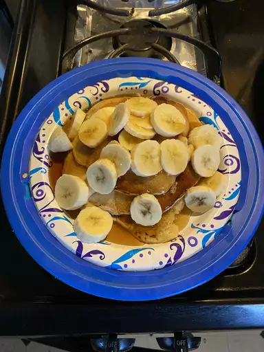

This top-rated banana pancake recipe is easy to make and it comes together
in just 15 minutes
- flour
- sugar
- baking powder
- salt
- an egg
- milk
- vegetable oil
- bananas
- Combine your dry ingredients (flour, sugar, salt, baking powder) in one bowl
and your wet ingredients (egg, milk, vegetable oil, mashed bananas) in another
bowl. Add the dry ingredients to the bowl with the wet ingredients, then stir until
they're incorporated. It's OK if your batter is slightly lumpy.
- Pour the batter in ¼ cup portions onto a lightly oiled pan or griddle over
medium-high heat. Cook for a few minutes, flip with a spatula, and cook for another
few minutes (or until each side is golden brown).
- Serve your banana pancakes immediately. They're delicious alone or with your
favorite pancake toppings.